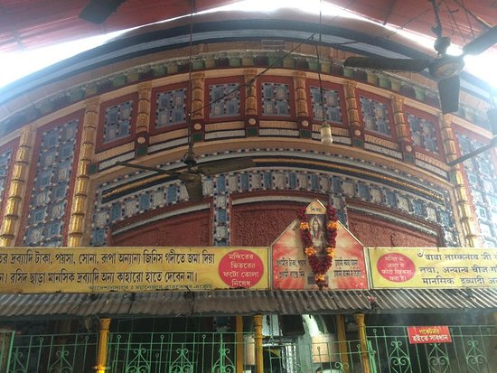
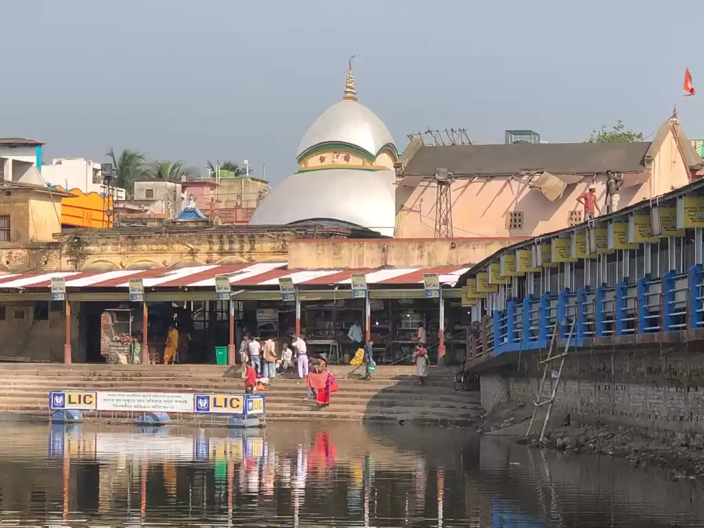

Tarakeswar Temple


Tarakeswar Temple
The Taraknath temple, dedicated to the Hindu god Shiva worshiped as Tarakanatha, is a major pilgrimage spot in the town of Tarakeswar, West Bengal, India. Built in 1729, the temple is an atchala structure of Bengal temple architecture with a 'natmandir' in front. Close by are the shrines of Kali and Lakshmi Narayan. Dudhpukur, a tank to the north of the Shiva temple is believed to fulfil the prayers of those taking a dip in it.[1] It is also considered one of the 64 Jyotirlinga according to Shiv Puran.
Baba Taraknath also known as Baba Tarakeshwar or Baba Tarakeshwarnath. He is a violent (Ugra) form of Lord Shiva who drank venom (Vish) during Samudra-manthan. Tarakeshwarnath is the husband of Bhagwati Tara. His shivalinga is also situated in Bengal, a few kilometres away from Tarapith.
He grants his devotees a good health and life from which anything can be achieved. It is said that those who are true devotees of Tara and Tarak, Bhagwati Tara breastfeeds that devotee and then the devotee attains moksha or salvation.
Dress Code for Entry: Males of all ages must mandatorily remove their shirts and vests and need to enter temple with bare upper body. They are not allowed to wear any kind of clothes above their waist.
Legends
As per local legends, the temple was built by Raja Bharamalla Rao[citation needed] to discover a Linga in the jungles near Tarakeswar. The temple was later built around the swayambhu linga (self-manifested) referred as Baba Taraknath in 1729 AD
Dress Code
Men must enter the sanctum sanctorum shirtless after completely removing their shirts and vests prior to entry. The priests at the temple entrance shouts “ছেলেরা পুরো খালি গায়ে, জামা গেঞ্জি সব খুলে ঢুকবেন” which roughly translates to “Men should be completely bare chested, remove all your shirts and vests before entry”
Festivities
Pilgrims visit the temple throughout the year, especially on Mondays. But thousands of pilgrims visit Tarakeswar on the occasions of 'Shivaratri' and 'Gajan', the former taking place in Phalgun (Feb-March) while the latter lasts for five days ending on the last day of Chaitra (mid-April). The month of Sravana (mid-July to mid-August) is auspicious for Shiva when celebrations are held n each Monday.
TARAKESHWAR
Shivaratri: Night Of The Lord, Destroyer Of Evil
By Rajashri Dasgupta
In the month of Shravan, thousands of devotees who walk together to ‘Baba’s Temple’ forget the differences in their age, gender and social status. Fasting without a drop of water, they walk sleepless and barefoot, with pots of Ganga jal tied to the ends of long bamboo poles slung over their shoulders. With unwavering faith, the devout undertake this yatra to the Tarakeshwar Temple, to pour the holy waters of the Ganga over the swayambhu linga of Baba Taraknath, as Lord Shiva is fondly called here. Through their determined, difficult journey, they have only one prayer on their lips, “Bhole Baba paar karega!” (Shiva will show the way!). He does so unfailingly.
Legend goes that the mendicant brother of Raja Vishnu Das, who moved to Bengal in early 18th century, discovered the linga in the jungles near Tarakeshwar after he was led to it by a dream. Other stories narrate that he found the linga after he noticed cows enter the jungle with udders full of milk, only to discharge them upon a linga with a deep hollow. A temple was built, and later renovated, on the same spot where the linga, which has a big, wide dent on the top, was found. Locals love to narrate how, over the years, several attempts to shift the linga and install it elsewhere have failed.
Built in 1729, the typical Bengal-style aatchalla architecture of the Tarakeshwar Temple, curved like a hut with an eight-sided rounded roof in two tiers, can hardly be appreciated because it is stifled on all sides by concrete structures, houses and shops. In fact, one gets the feeling of stumbling onto the temple straight from the maze of narrow, crowded lanes, paved with flagstones, and spilling over with shops and eateries of a sprawling bazaar. On the top-most tier are three spires that can be seen from afar. The best view of the temple is to be had from the tank behind it called Dudhpukur, where pilgrims take a dip or wash themselves before entering the shrine.
Close to the temple entrance, the chief mahant (priest) lives in a rambling, decrepit, two-storeyed structure with a courtyard that’s an architectural delight. This was once the grand residence of the zamindar, Sri Bharamallah, who contributed considerably to the construction of the temple. The dark and dingy temple office is housed in one of this building’s numerous rooms. The temple manager rued the lack of funds for renovation of the building and the upkeep of its garden, and spoke of the ongoing tension between the temple’s estate and its pandas on the issue of sharing whatever becomes available by way of donations.
ORIENTATION
On the way to Tarakeshwar, many pilgrims stop at the temples of Dakat Kali (about 25 km before Tarakeshwar), named so after dacoits who are believed to be great devotees of Kali, Kashi Vishwanath (about 10 km before Tarakeshwar) and Loknath (about 6 km before Tarakeshwar).
All three temples are between Sheoraphuli and Tarakeshwar, spread across a 30-km stretch. Clean bathrooms are to be found at the Kashi Vishwanath Temple. For those who wish to perform the pilgrimage to Tarakeshwar in Shravan but are unable to walk the entire distance, the most popular alternative is to arrive by vehicle or train at Sheoraphuli (45 km/ 1 hr north-west of Kolkata, 30 km before and east of Tarakeshwar). In Tarakeshwar, the railway station is at a walk-able distance from the temple, about 500 yards or a 5-min walk through the preferred shortcut (approx Rs 10 by cycle rickshaw). The bus stand is about 1 km from the temple (Rs 10 by cycle rickshaw).